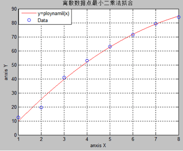
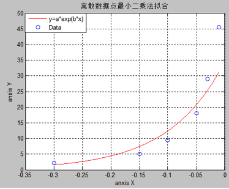
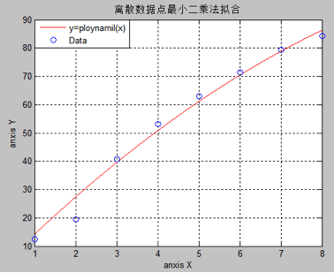

8.7 最小二乘法
1.例题与程序
按下列数据
 =1 2 3 4 5
6 7 8
=1 2 3 4 5
6 7 8
=12.5 19.5
40.8 53.1 63.0
71.4 79.3 84.2
用抛物线作曲线拟合
按题中要求多项式向量取[1 1 1]表示常数项一次项二次项都存在
MATLAB程序编辑如下：
（1）主函数
（注：例题与实验题使用相同子函数，故只在实验题中列出）
%多项式最小二乘法拟合主函数
%数据录入模块
Data=input('please input data
Matrix')
n=length(Data(1,:));
%插值系数计算模块
P=f1(Data);
%残差计算模块
errf1=norm(polyval(P,Data(1,:))-Data(2,:))
%符号解显示模块
y=poly2str(P,'x')
%数值解及作图模块
t=Data(1,1):0.0001:Data(1,n);
y1=polyval(P,t);
plot(t,y1,'r',Data(1,:),Data(2,:),'o');
legend('y=ploynamil(x)','Data');
title('离散数据点最小二乘法拟合');
xlabel('anxis X');
ylabel('anxis Y');
grid on
（2）通用子函数
1.多项式拟合子函数：f1
%多项式拟合子函数
%函数的出入口
function v=f1(Data)
%多项式形式向量的输入
c=input('please input the
ploynamil')
%数据处理模块
k=length(c);
xi=Data(1,:);
yi=Data(2,:);
m=length(xi);
o=ones(1,m);
n=0;
%计算多项式有多少项，以确定正则矩阵的列数
for i=1:k
if c(i) ~=0
n=n+1;
end
end
%生成正则矩阵并置零
A=zeros(m,n);
%生成一个p向量用以储存多项式不为零项的次数
p=zeros(1,n);
j=1;
for i=1:k
if c(i)~=0
p(j)=i;
j=j+1;
end
end
%计算拟合参数
for i=1:n
A(:,i)=(xi.^(p(i)-1)).*o;
end
x=(A'*A)^(-1) * (A'*yi');
%用所得的拟合参数计算多项式系数向量
b=zeros(1,k);
x=fliplr(x);
for i=1:n
b(k-p(i)+1)=x(i);
end
%将系数向量作为函数值返回
v=b;
2.指数函数拟合子函数
%指数函数拟合拟合子函数
%函数的出入口
function v=f2(Data)
%数据处理模块
xi=Data(1,:);
yi=log(Data(2,:));
m=length(xi);
o=ones(1,m);
n=2;
A=zeros(m,n);
%生成正则矩阵
A(:,1)=o;
A(:,2)=o.*xi;
%利用正则矩阵计算拟合系数
x=(A'*A)^(-1) * (A'*yi');
%对系数a进行还原
x(1)=exp(x(1));
%将拟合系数列向量转置并作为返回值
v=x';
MATLAB程序运行结果下：
1. 符号解
>> plsm
please input data
Matrix[1 2 3 4 5 6 7 8;12.5 19.5 40.8 53.1 63.0 71.4 79.3 84.2]
Data =
1.0000
2.0000 3.0000 4.0000
5.0000 6.0000 7.0000
8.0000
12.5000
19.5000 40.8000 53.1000
63.0000 71.4000 79.3000
84.2000
please input the
ploynamil[1 1 1]
c =
1
1 1
errf1 =
6.8335
y =
-0.84167 x^2 + 18.3202 x - 8.0036
>>
计算结果给出了与题中要求格式一致的二次多项式并且残差为6.8335效果较理想
2. 图象与数值解

从图中看出拟合效果比较好，除了一个点偏离的较远其它点都离拟合曲线较近。
2.实验题
（1）按以下数据
 =0.40 0.55
0.65 0.8 0.9
=0.40 0.55
0.65 0.8 0.9
 =0.537 0.685
0.789 0.919 1.26
=0.537 0.685
0.789 0.919 1.26
求形如  的拟合曲线
的拟合曲线
（1）题的主函数：
%指数函数最小二乘法拟合主函数
%数据录入模块
Data=input('please input data
Matrix')
n=length(Data(1,:));
%插值系数计算模块
A=f2(Data);
%残差计算模块
errf2=norm(A(1)*exp(A(2)*Data(1,:))-Data(2,:))
%符号解显示模块
syms x;
y=A(1)*exp(A(2)*x)
%数值解及作图模块
t=Data(1,1):0.0001:Data(1,n);
y2=A(1)*exp(A(2)*t);
plot(t,y2,'b',Data(1,:),Data(2,:),'o');
legend('y=a*exp(b*x)','Data');
title('离散数据点最小二乘法拟合');
xlabel('anxis X');
ylabel('anxis Y');
grid on
MATLAB运行结果：
符号解：
>> elsm
please input data
Matrix[-0.30,-0.15,-0.10,-0.05,-0.03,-0.01;2.08,5.06,9.45,18.08,29.03,45.59]
Data =
-0.3000
-0.1500 -0.1000 -0.0500
-0.0300 -0.0100
2.0800
5.0600 9.4500 18.0800
29.0300 45.5900
errf2 =
15.4597
y =
4878675183782343/140737488355328*exp(724778497182557/70368744177664*x)
>>
结果得到了指数拟合函数符号解，并且看出残差还是比较大的为15.4597
图象解：

图象中可以看出拟合效果并不是很理想与数据点有些偏差
（2）对例题中所给数据求形如的二次拟合曲线
主函数与例题中使用同一个函数只是多项式向量改为[0 1 1]表示常数项不纯在，有一次项有二次项。
运行结果
（1） 符号解
>> plsm
please input data Matrix[1 2 3
4 5 6 7 8;12.5 19.5 40.8 53.1 63.0 71.4 79.3 84.2]
Data =
1.0000
2.0000 3.0000 4.0000
5.0000 6.0000 7.0000
8.0000
12.5000
19.5000 40.8000 53.1000
63.0000 71.4000 79.3000
84.2000
please input the ploynamil[0 1
1]
c =
0
1 1
errf1 =
8.9223
y =
-0.47453 x^2 + 14.5754 x
>>
运行结果给出了与题目要求形式一致的插值多项式，并且给出了残差errf1=8.9223，与例题中的残差errf1 =6.8335比较有一定增大，说明拟合效果不如例题给出的多项式好
（2） 图象解

从图象中看出拟合效果与例题相比确实要差一些。
总结：
由于MATLAB内核中包含有maple，并且MATLAB强大的图形功能，和基于线性代数的设计理念，使得MATLAB不仅可以实现数据的可视化，而且还可以的到其它编程语言不好的到的符号解。并且编程语言十分简洁明了。